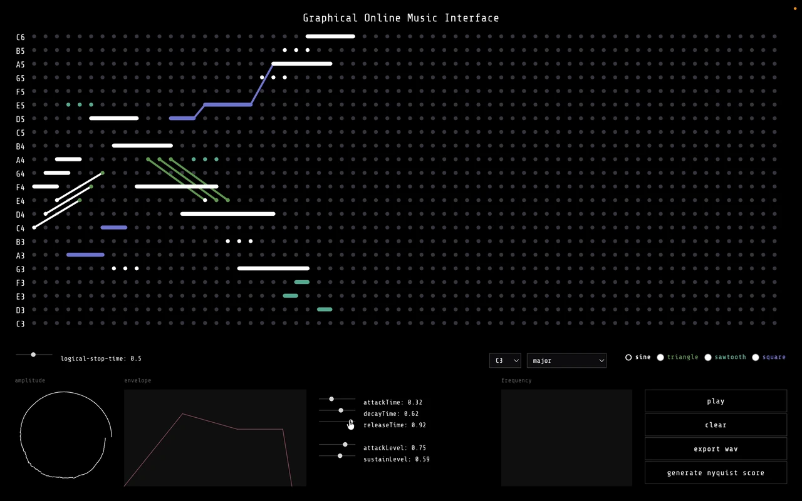
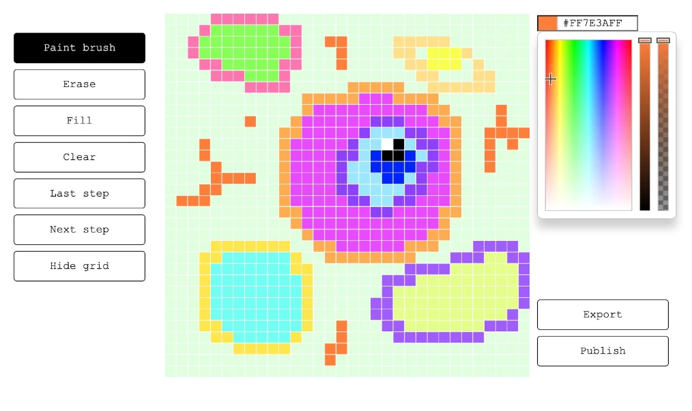
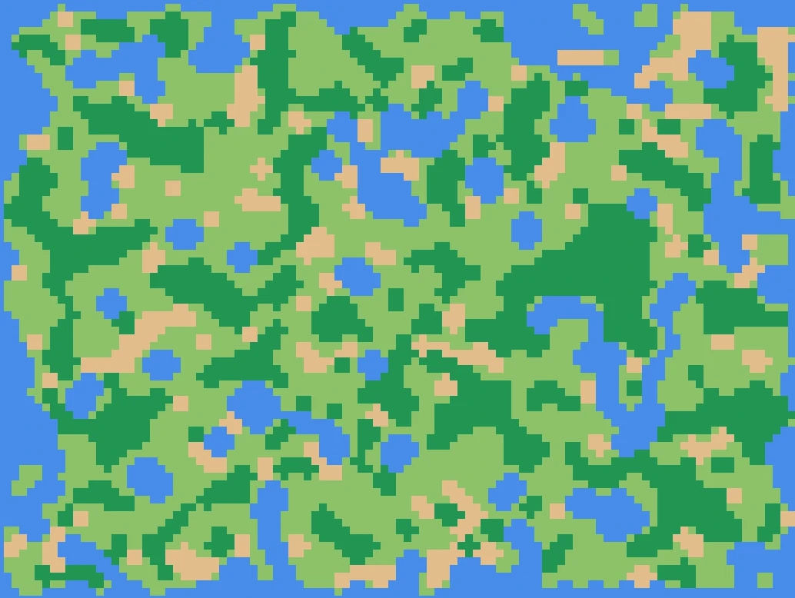
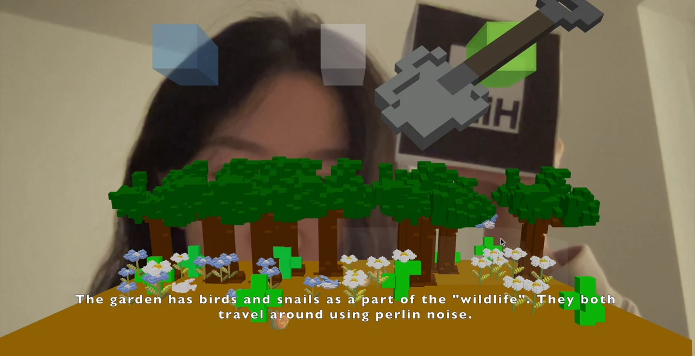
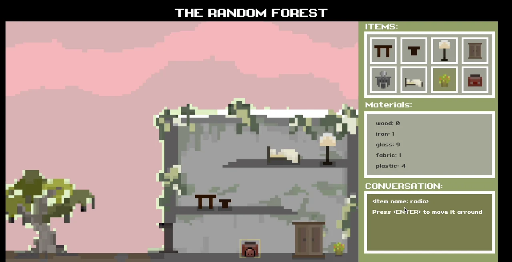
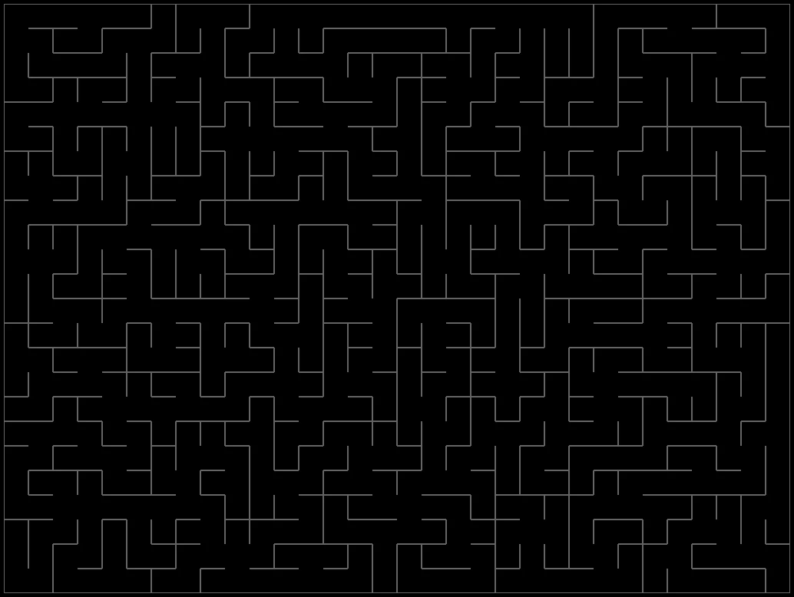
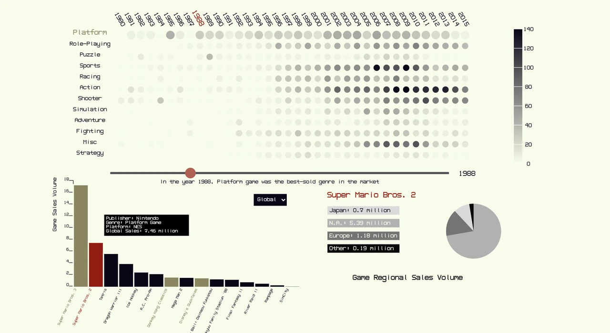

Unlikely
garden.
02 / SELECTED PROJECTS
Experiments in sound, procedural worlds, and visual interaction.
01Graphical Music InterfaceCOMPUTER MUSIC / INTERACTION

A website for creating music compositions through visual interactions. Built to make computer music composition more accessible and enjoyable.
02SharePixCREATIVE TOOLS / PIXEL ART

A platform for creating and sharing pixel art, with drawing tools, saved drafts, PNG export, and a social feed for discovering artists and their work.
03Random Island GeneratorPROCEDURAL GENERATION / WORLDS

A procedural content generation algorithm that creates natural-looking game environments, with flexible and customizable maps.
04Garden on the DeskAUGMENTED REALITY / PLAY

An augmented reality garden simulation. Speech recognition and feature tracking let you plant a miniature garden through your webcam.
05RandforestGAMES / CRAFTING & FORAGING

A Terraria-inspired game with furniture crafting and foraging, plus changing weather simulated using Perlin noise.
06Maze Generator & SolverALGORITHMS / EXPLORATION

A random maze generator and solver, implemented with algorithms including Sidewinder, Wilson’s, Random Walk, and Aldous–Broder.
07Evolution of Video GamesDATA VISUALIZATION / STORIES

A storytelling visualization of the history of video games worldwide. Three views connect through linked highlighting and filters.
+ 03 / ABOUT ME
Hello,
I’m Evelyn.
I explore the space between algorithms, graphics, electronic music, and the joy of making things interactive.
My projects range from visual music composition and procedural game worlds to augmented reality gardens, data visualization, and creative tools.
+ 04 / A CONVERSATION STARTS SOMEWHERE